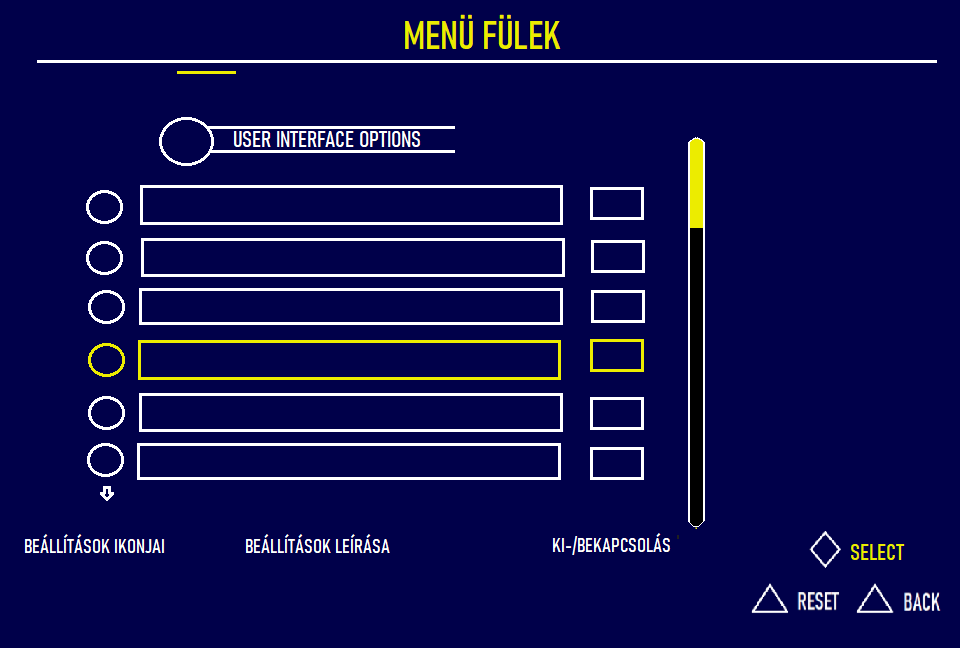

RENDSZERTERVEZÉS
Történet
|
Dátum
|
Verzió
|
Leírás
|
Szerző
|
|
2023.11.17
|
1.0
|
Kezdeti verzió
|
Kelemen Beáta
|
|
2023.11.18
|
1.1
|
Másodlagos verzió
|
Buha Milán
|
|
2023.11.19
|
1.2
|
|
|
Tartalomjegyzék
- Bevezetés
- Felhasználói felület
- Adatmodellek
3.1. Adatbázis kezelő kiválasztása
3.2. Szemantikai adatmodell
3.3 Relációs adatmodell
3.4. Az adatbázis kezelővel kapcsolatot tartó osztályok
- A funkcionális modell kiegészítése
Bevezetés
A "The Uni Saga" egy rendkívül izgalmas és részletgazdag online szerepjáték, amely egy egyetemi környezetben játszódik. A játék koncepciója arra épül, hogy a játékosok beleélhessék magukat az egyetemi élet mindennapjaiba, ugyanakkor fantasztikus elemekkel tűzdelt kalandok részeseivé váljanak. A játék célja, hogy egy valósághű, mégis lenyűgözően színes és interaktív virtuális egyetemi élményt nyújtson a felhasználóknak.
Játékvilág
A "The Uni Saga" világa egy egyetemi campus és annak környéke. A játékosok számára lehetőség nyílik felfedezni a különböző épületeket, részt venni előadásokon, találkozni más karakterekkel, és természetesen, részt venni különféle kihívásokban és küldetésekben.
Célkitűzések
Az egyetemi élet valósághű és szórakoztató megjelenítése. A fantasy és kaland elemek hozzáadása, amelyek lehetővé teszik a játékosok számára, hogy egyedi karaktereket fejlesszenek és részt vegyenek lenyűgöző történetekben.
A Történet Háttere
A játék története egy kitalált egyetem köré fonódik, ahol különféle varázslatos és misztikus események történnek. A játékosoknak feladata megvizsgálni és megoldani ezeket a rejtélyeket, miközben egyetemi életüket is élvezik.
Játékstílus
A játékosoknak szabadon választható karaktereket kell irányítaniuk, akik különféle szakokat választhatnak, részt vehetnek sporteseményeken, vagy akár maguk is létrehozhatnak csoportokat és klubokat. A játékstílus sokszínű, és minden játékosnak lehetősége van saját útját járni az egyetemi életben.
Játékmenet
A játékosoknak küldetéseket kell teljesíteniük, vizsgákat tenniük, barátságokat és ellenséges viszonyokat kialakítaniuk, miközben egy sor különféle fantasy lény és varázslat között élnek. A játékmenet alapján a karakterek fejlődnek, és az egyetemi év során új kihívásokkal találják szemben magukat.
Felhasználói felület
A "The Uni Saga" rendszertervezése során a felhasználói felület különös figyelmet kap, hiszen ez a játékosok közvetlen interakciójának a helyszíne. A felhasználói felület tervezése során az alábbi fontos szempontokat vesszük figyelembe:

Bejelentkezés és Regisztráció
A bejelentkezési és regisztrációs folyamatoknak intuitívnak és egyszerűnek kell lenniük. A felhasználók könnyen hozzon létre fiókot, és biztonságosan jelentkezzen be a játékba. A regisztráció során a felhasználóra vonatkozó adatok megadása, ezek közé tartozik a név, e-mail, telefonszám, felhasználónév és jelszó kiválasztása, de lehetőségük van Facebook, Google, Apple,Xbox fiókkal is. Majd a későbbiekben ezek megadásával tudunk bejelentkezni.
Főmenü
A főmenü az elsődleges hely a játékon belüli navigációhoz és funkciók eléréséhez. Az alábbiakban néhány fontos menüpontot sorolunk fel:
- Új játék kezdése - Innen indíthatjuk el a karakterünk kalandját, létrehozva egy új játékmenetet.
- Korábban mentett játék betöltése - Ha korábban mentettünk egy játékállást, innen tölthetjük be azt.
- Beállítások - A beállítások menüpont alatt számos opció található, például grafikai beállítások, hang, irányítás stb.
- Karakter - Ezen a területen lehetőség van a karakterünk statisztikáinak és felszerelésének részletes megtekintésére, valamint módosítására.
- Chat - Itt érhető el a játék belső kommunikációs rendszere, beleértve a chatet és más kapcsolódó funkciókat.
- Kilépés - Ezzel a gombbal tudjuk bezárni a játékot.

Szociális Menüpontok
A főmenüben találhatók olyan opciók, mint "Barátok" vagy "Szövetségek", ahol a játékosok kezelhetik kapcsolataikat más játékosokkal. Itt lehetőség van barátokhoz csatlakozni, szövetségeket kötni és kommunikálni.
Küldetések és Feladatok
A főmenüben található "Küldetések" rész áttekintést nyújthat a jelenlegi és elérhető küldetésekről. Ez segíti a játékosokat az aktuális célok meghatározásában és a fejlődésben.
Térkép
Az interaktív térkép segítségével a játékosok könnyen navigálhatnak az egyetemi campuson és annak környékén. Pontok jelzik az elérhető küldetéseket, fontos helyszíneket és más játékosok pozícióit.
Stílus és Megjelenés
A felhasználói felület stílusa az egyetemi hangulathoz igazodik, ugyanakkor tartalmaz fantasztikus elemeket is. Az egyszerű navigáció és a látványos grafika hozzájárulnak a felhasználói élményhez.
Animációk és Effektek
Az interaktív elemek és animációk fokozzák a felhasználói élményt. Például, karakterek közötti interakciók, küldetések sikeres teljesítésekor megjelenő effektek.
Hibaüzenetek és Segítség
A felhasználói felület tartalmaz informatív hibaüzeneteket és segítséget nyújtó szekciókat, hogy a játékosok könnyen megértsék a rendszer üzeneteit és feladataikat. Ezek a következő területekre terjedhetnek ki:
- Hangbeállítások - Problémák a mikrofonnal vagy hangszórókkal. Hangminőségi problémák, mint például zaj vagy torzítás.
- Irányítás - Játékvezérlőkkel vagy billentyűzet és egér beállításokkal kapcsolatos problémák. Útmutató a játékvezérlés testreszabásához.
- Nyelvi Beállítások - Nyelvi beállításokkal és fordítási problémákkal kapcsolatos segítség. Többnyelvű támogatás és helyi nyelvi beállítások.
- Hálózati Kapcsolat - Hálózati problémák, mint például megszakadt vagy lassú kapcsolatok. Segítség a hálózati beállítások optimalizálásában.
Grafikai Beállítások
Segítség a grafikai beállítások optimalizálásában, különböző hardverkonfigurációkhoz.
Hibaüzenetek grafikai problémák esetén, mint például képfrissítési hibák.
Felhasználói Fiók és Biztonság
Segítség a felhasználói fiókokkal kapcsolatos problémákban, mint például bejelentkezési hibák.
Útmutatás a fiókbiztonsági kérdésekben, mint például jelszó-visszaállítás.
Játékmenet
Útmutató a játék alapvető mechanikáihoz és játékmenethez.
Segítség a küldetések vagy szintek megrekedése esetén.
Az alábbi képen látható a szoftverünk felhasználói felülete.
A fentebb írt pontok által kigondolt megvalósulása.
Adatmodellek
A rendszer adatmodellezése kiemelkedő fontosságú a "The Uni Saga" fejlesztése során. A következő részekben olvashatunk az adatmodellek különböző aspektusairól, beleértve a választott adatbázis kezelőt, a szemantikai adatmodellt és a relációs adatmodellt.
Adatbázis kezelő kiválasztása
A játékhoz MySQL adatbázis-kezelőt választottunk. Ennek választása mögött a hatékony adatkezelés
és a kiterjedt támogatottság áll. A MySQL lehetővé teszi az összetett adatok kezelését és a
kapcsolatok hatékony modellezését, ami ideális a játék komplex adatstruktúráinak tárolására.
Szemantikai Adatmodell
A szemantikai adatmodell a játékban használt entitásokat és azok közötti kapcsolatokat definiálja.
The UNI Saga Data Model Documentation
Egyedek és Attribútumok
Achievement (Teljesítmény)
Attribútumok: achievement_id, name, access_condition, reward
Leírás: A játékban elérhető különböző teljesítmények, feltételekkel és jutalmakkal.
Player (Játékos)
Attribútumok: player_id, username, password
Leírás: A játékban résztvevő felhasználók alapvető adatai.
UserProfile (Felhasználói Profil)
Attribútumok: profile_id, player_id, status
Leírás: A játékosok személyes profiljai, állapotokkal.
GamePreferences (Játékpreferenciák)
Attribútumok: preference_id, language, notification_setting
Leírás: A játékosok játékbeli preferenciái, beleértve a nyelvet és értesítési beállításokat.
Character (Karakter)
Attribútumok: character_id, name, level, skills, stats, class
Leírás: A játékosok által irányított karakterek, képességekkel és statisztikákkal.
Inventory (Leltár)
Attribútumok: inventory_id, item_list
Leírás: A karakterek leltárai, tárgylistákkal.
Item (Tárgy)
Attribútumok: item_id, name, type
Leírás: A játékban megtalálható tárgyak, típusokkal.
Mission (Küldetés)
Attribútumok: mission_id, name, description, reward
Leírás: A játékban elérhető küldetések, leírásokkal és jutalmakkal.
GraphicsSettings (Grafikai Beállítások)
Attribútumok: setting_id, resolution, shadows, texture_quality
Leírás: A játék grafikai beállításai.
ControlSettings (Irányítási Beállítások)
Attribútumok: setting_id, mouse, macros, keyboard
Leírás: A játék irányítási beállításai.
AudioSettings (Hangbeállítások)
Attribútumok: setting_id, music, effects, voice
Leírás: A játék hangbeállításai.
Kapcsolatok
Achievement - Player: N:1
Sok teljesítmény kapcsolódik egy játékoshoz, aki ezeket elérheti.
Player - UserProfile: 1:1
Minden játékoshoz pontosan egy felhasználói profil tartozik.
Player - Character: 1:N
Egy játékosnak több karaktere is lehet a játékban.
Character - Inventory: 1:1
Minden karakterhez egy leltár tartozik.
Character - Mission: 1:N
Egy karakter több küldetésben is részt vehet.
Inventory - Item: 1:N
Inventory (Leltár)
Attribútumok: inventory_id, item_list
Leírás: A karakterek leltárai, tárgylistákkal.
Item (Tárgy)
Attribútumok: item_id, name, type
Leírás: A játékban megtalálható tárgyak, típusokkal.
Kapcsolatok
Inventory - Item: 1:N
Egy leltárban több tárgy is lehet.
UserProfile - GamePreferences: 1:N
Egy felhasználói profil több játékpreferenciához kapcsolódhat.
GamePreferences - GraphicsSettings: 1:1
Minden játékpreferencia egy grafikai beállításhoz kapcsolódik.
GamePreferences - ControlSettings: 1:1
Minden játékpreferencia egy irányítási beállításhoz kapcsolódik.
GamePreferences - AudioSettings: 1:1
Minden játékpreferencia egy hangbeállításhoz kapcsolódik.
Relációs Adatmodell
A relációs adatmodell a szemantikai adatmodellt konkrét táblákká és kapcsolatokká alakítja át.
Relációs Adatmodell Táblái
Achievements
Columns: achievement_id (PK), name, access_condition, reward
Kapcsolatok: Achievements_Player (FK: player_id)
Players
Columns: player_id (PK), username, password
Kapcsolatok: UserProfile (FK: profile_id), Characters (FK: character_id), Achievements_Player (FK: achievement_id)
UserProfiles
Columns: profile_id (PK), player_id (FK), status
Kapcsolatok: GamePreferences (FK: preference_id)
- reg_date: regisztrációs dátum
chat entity:
history: a chat historyt tárolja
last: legutóbbi üzenete
ban: van-e chat banja/li>
The Uni Saga - Data Model Documentation
Data Model - Relational Database
Achievements
Columns: achievement_id (PK), name, access_condition, reward
Relationships: Achievements_Player (FK: player_id)
Players
Columns: player_id (PK), username, password
Relationships: UserProfile (FK: profile_id), Characters (FK: character_id), Achievements_Player (FK: achievement_id)
UserProfiles
Columns: profile_id (PK), player_id (FK), status
Relationships: GamePreferences (FK: preference_id)
GamePreferences
Columns: preference_id (PK), language, notification_setting
Relationships: GraphicsSettings (FK: setting_id), ControlSettings (FK: setting_id), AudioSettings (FK: setting_id)
Funkciónális modellek
Interakció a karakterek között
Csevegés: A karakterek közötti szöveges kommunikáció lehetősége, amely a közösségépítés és a stratégiai tervezés szempontjából kulcsfontosságú.
Szövetségek Kialakítása: A játékosoknak lehetősége van szövetségek és csoportok létrehozására, amelyek segítik egymást a küldetések során és a játékmenettől függően.
Küldetések Teljesítése: A karakterek küldetéseket teljesítenek, amelyek a játék fő eseményeit képviselik.
Küldetések Elérhetővé Tétele: A játékosok megtekinthetik a rendelkezésre álló küldetéseket a főmenüből.
Küldetések Elfogadása: A játékosok kiválaszthatnak egy küldetést és elfogadhatják azt a karakterük számára.
Küldetés Elvégzése: A karakterek részt vesznek a kiválasztott küldetésben, amely során különböző feladatokat teljesítenek.
Jutalmak és Fejlődés: Sikeres küldetés teljesítés esetén a karakterek jutalmakat kapnak, például tapasztalatpontokat, felszereléseket vagy más erőforrásokat, és fejlődnek a szintlépés során.
Karakterfejlődés: A karakterek fejlődése a játék egyik kulcspontja.
Szintlépés: A karakterek szintlépése különböző tevékenységek és küldetések során történik, amelyek növelik a karakter képességeit.
Készségfejlesztés: A karakterek speciális készségeket sajátíthatnak el, amelyek hatékonyabbá teszik őket a küldetések során.
Felszerelések Változtatása: A karakterek cserélhetik felszereléseiket, optimalizálva azokat a játékstílusuknak megfelelően.
Felhasználói Interfész
A felhasználói felület a fentebb említett feldolgozási lépéseknek megfelelően kialakított navigációt és interakciót biztosít a játékosok számára. A menük, gombok és egyéb elemek intuitívak és könnyen érthetőek, hogy a felhasználók egyszerűen eligazodhassanak a játékban.